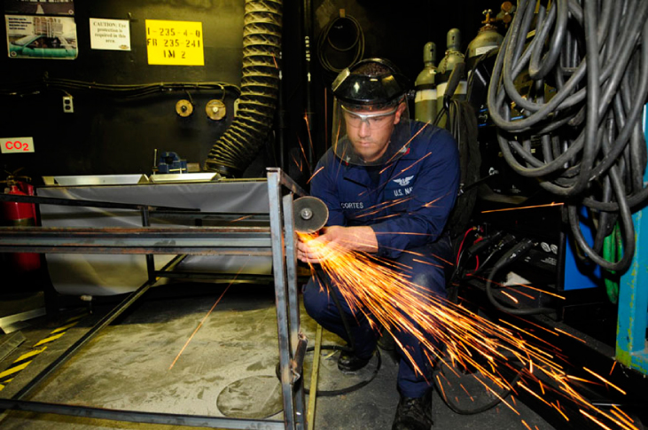
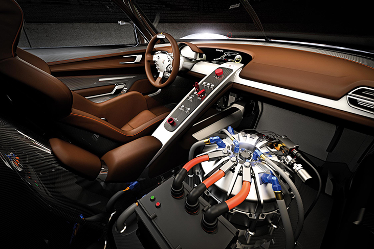
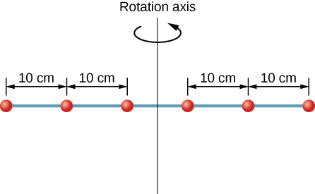
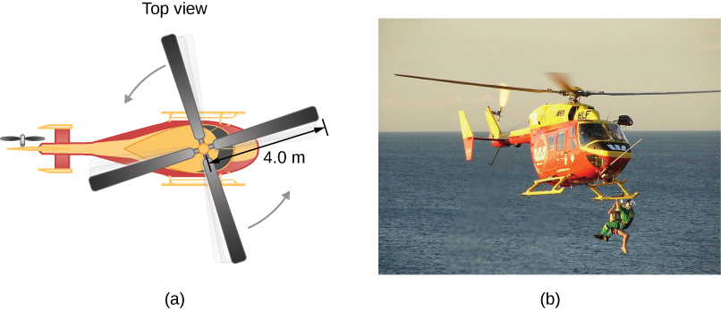
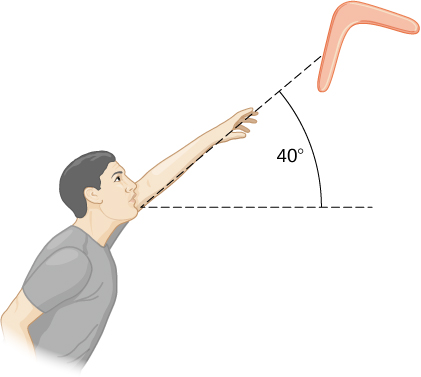
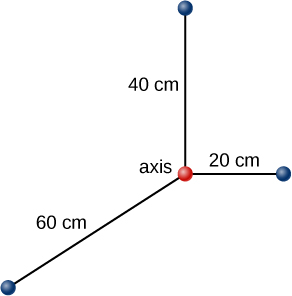
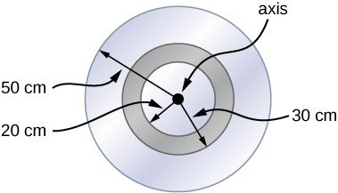

Describe the differences between rotational and translational kinetic energy
Define the physical concept of moment of inertia in terms of the mass distribution from the rotational axis
Explain how the moment of inertia of rigid bodies affects their rotational kinetic energy
Use conservation of mechanical energy to analyze systems undergoing both rotation and translation
Calculate the angular velocity of a rotating system when there are energy losses due to nonconservative forces
So far in this chapter, we have been working with rotational kinematics: the description of motion for a rotating rigid body with a fixed axis of rotation. In this section, we define two new quantities that are helpful for analyzing properties of rotating objects: moment of inertia and rotational kinetic energy. With these properties defined, we will have two important tools we need for analyzing rotational dynamics.
Rotational Kinetic Energy
Any moving object has kinetic energy. We know how to calculate this for a body undergoing translational motion, but how about for a rigid body undergoing rotation? This might seem complicated because each point on the rigid body has a different velocity. However, we can make use of angular velocity—which is the same for the entire rigid body—to express the kinetic energy for a rotating object. [link] shows an example of a very energetic rotating body: an electric grindstone propelled by a motor. Sparks are flying, and noise and vibration are generated as the grindstone does its work. This system has considerable energy, some of it in the form of heat, light, sound, and vibration. However, most of this energy is in the form of rotational kinetic energy.
The rotational kinetic energy of the grindstone is converted to heat, light, sound, and vibration. (credit: Zachary David Bell, US Navy)

Energy in rotational motion is not a new form of energy; rather, it is the energy associated with rotational motion, the same as kinetic energy in translational motion. However, because kinetic energy is given by , and velocity is a quantity that is different for every point on a rotating body about an axis, it makes sense to find a way to write kinetic energy in terms of the variable , which is the same for all points on a rigid rotating body. For a single particle rotating around a fixed axis, this is straightforward to calculate. We can relate the angular velocity to the magnitude of the translational velocity using the relation , where r is the distance of the particle from the axis of rotation and is its tangential speed. Substituting into the equation for kinetic energy, we find
In the case of a rigid rotating body, we can divide up any body into a large number of smaller masses, each with a mass and distance to the axis of rotation , such that the total mass of the body is equal to the sum of the individual masses: . Each smaller mass has tangential speed , where we have dropped the subscript t for the moment. The total kinetic energy of the rigid rotating body is
and since for all masses,
The units of [link] are joules (J). The equation in this form is complete, but awkward; we need to find a way to generalize it.
Moment of Inertia
If we compare [link] to the way we wrote kinetic energy in Work and Kinetic Energy, , this suggests we have a new rotational variable to add to our list of our relations between rotational and translational variables. The quantity is the counterpart for mass in the equation for rotational kinetic energy. This is an important new term for rotational motion. This quantity is called the moment of inertiaI, with units of :
For now, we leave the expression in summation form, representing the moment of inertia of a system of point particles rotating about a fixed axis. We note that the moment of inertia of a single point particle about a fixed axis is simply , with r being the distance from the point particle to the axis of rotation. In the next section, we explore the integral form of this equation, which can be used to calculate the moment of inertia of some regular-shaped rigid bodies.
The moment of inertia is the quantitative measure of rotational inertia, just as in translational motion, and mass is the quantitative measure of linear inertia—that is, the more massive an object is, the more inertia it has, and the greater is its resistance to change in linear velocity. Similarly, the greater the moment of inertia of a rigid body or system of particles, the greater is its resistance to change in angular velocity about a fixed axis of rotation. It is interesting to see how the moment of inertia varies with r, the distance to the axis of rotation of the mass particles in [link]. Rigid bodies and systems of particles with more mass concentrated at a greater distance from the axis of rotation have greater moments of inertia than bodies and systems of the same mass, but concentrated near the axis of rotation. In this way, we can see that a hollow cylinder has more rotational inertia than a solid cylinder of the same mass when rotating about an axis through the center. Substituting [link] into [link], the expression for the kinetic energy of a rotating rigid body becomes
We see from this equation that the kinetic energy of a rotating rigid body is directly proportional to the moment of inertia and the square of the angular velocity. This is exploited in flywheel energy-storage devices, which are designed to store large amounts of rotational kinetic energy. Many carmakers are now testing flywheel energy storage devices in their automobiles, such as the flywheel, or kinetic energy recovery system, shown in [link].
A KERS (kinetic energy recovery system) flywheel used in cars. (credit: “cmonville”/Flickr)

The rotational and translational quantities for kinetic energy and inertia are summarized in [link]. The relationship column is not included because a constant doesn’t exist by which we could multiply the rotational quantity to get the translational quantity, as can be done for the variables in [link].
Rotational and Translational Kinetic Energies and Inertia
Rotational
Translational
Moment of Inertia of a System of Particles
Six small washers are spaced 10 cm apart on a rod of negligible mass and 0.5 m in length. The mass of each washer is 20 g. The rod rotates about an axis located at 25 cm, as shown in [link]. (a) What is the moment of inertia of the system? (b) If the two washers closest to the axis are removed, what is the moment of inertia of the remaining four washers? (c) If the system with six washers rotates at 5 rev/s, what is its rotational kinetic energy?
Six washers are spaced 10 cm apart on a rod of negligible mass and rotating about a vertical axis.

Strategy
We use the definition for moment of inertia for a system of particles and perform the summation to evaluate this quantity. The masses are all the same so we can pull that quantity in front of the summation symbol.
We do a similar calculation.
We insert the result from (a) into the expression for rotational kinetic energy.
Solution
.
.
.
Significance
We can see the individual contributions to the moment of inertia. The masses close to the axis of rotation have a very small contribution. When we removed them, it had a very small effect on the moment of inertia.
In the next section, we generalize the summation equation for point particles and develop a method to calculate moments of inertia for rigid bodies. For now, though, [link] gives values of rotational inertia for common object shapes around specified axes.
Values of rotational inertia for common shapes of objects.
Applying Rotational Kinetic Energy
Now let’s apply the ideas of rotational kinetic energy and the moment of inertia table to get a feeling for the energy associated with a few rotating objects. The following examples will also help get you comfortable using these equations. First, let’s look at a general problem-solving strategy for rotational energy.
Rotational Energy
Determine that energy or work is involved in the rotation.
Determine the system of interest. A sketch usually helps.
Analyze the situation to determine the types of work and energy involved.
If there are no losses of energy due to friction and other nonconservative forces, mechanical energy is conserved, that is, .
If nonconservative forces are present, mechanical energy is not conserved, and other forms of energy, such as heat and light, may enter or leave the system. Determine what they are and calculate them as necessary.
Eliminate terms wherever possible to simplify the algebra.
Evaluate the numerical solution to see if it makes sense in the physical situation presented in the wording of the problem.
Calculating Helicopter Energies
A typical small rescue helicopter has four blades: Each is 4.00 m long and has a mass of 50.0 kg ([link]). The blades can be approximated as thin rods that rotate about one end of an axis perpendicular to their length. The helicopter has a total loaded mass of 1000 kg. (a) Calculate the rotational kinetic energy in the blades when they rotate at 300 rpm. (b) Calculate the translational kinetic energy of the helicopter when it flies at 20.0 m/s, and compare it with the rotational energy in the blades.
(a) Sketch of a four-blade helicopter. (b) A water rescue operation featuring a helicopter from the Auckland Westpac Rescue Helicopter Service. (credit b: modification of work by “111 Emergency”/Flickr)

Strategy
Rotational and translational kinetic energies can be calculated from their definitions. The wording of the problem gives all the necessary constants to evaluate the expressions for the rotational and translational kinetic energies.
Solution
The rotational kinetic energy is
We must convert the angular velocity to radians per second and calculate the moment of inertia before we can find K. The angular velocity is
The moment of inertia of one blade is that of a thin rod rotated about its end, listed in [link]. The total I is four times this moment of inertia because there are four blades. Thus,
Entering and I into the expression for rotational kinetic energy gives
Entering the given values into the equation for translational kinetic energy, we obtain
To compare kinetic energies, we take the ratio of translational kinetic energy to rotational kinetic energy. This ratio is
Significance
The ratio of translational energy to rotational kinetic energy is only 0.380. This ratio tells us that most of the kinetic energy of the helicopter is in its spinning blades.
Energy in a Boomerang
A person hurls a boomerang into the air with a velocity of 30.0 m/s at an angle of with respect to the horizontal ([link]). It has a mass of 1.0 kg and is rotating at 10.0 rev/s. The moment of inertia of the boomerang is given as where . (a) What is the total energy of the boomerang when it leaves the hand? (b) How high does the boomerang go from the elevation of the hand, neglecting air resistance?
A boomerang is hurled into the air at an initial angle of .

Strategy
We use the definitions of rotational and linear kinetic energy to find the total energy of the system. The problem states to neglect air resistance, so we don’t have to worry about energy loss. In part (b), we use conservation of mechanical energy to find the maximum height of the boomerang.
Solution
Moment of inertia: .
Angular velocity: .
The rotational kinetic energy is therefore
The translational kinetic energy is
Thus, the total energy in the boomerang is
We use conservation of mechanical energy. Since the boomerang is launched at an angle, we need to write the total energies of the system in terms of its linear kinetic energies using the velocity in the x- and y-directions. The total energy when the boomerang leaves the hand is
The total energy at maximum height is
By conservation of mechanical energy, so we have, after canceling like terms,
Since , we find
Significance
In part (b), the solution demonstrates how energy conservation is an alternative method to solve a problem that normally would be solved using kinematics. In the absence of air resistance, the rotational kinetic energy was not a factor in the solution for the maximum height.
Check Your Understanding A nuclear submarine propeller has a moment of inertia of . If the submerged propeller has a rotation rate of 4.0 rev/s when the engine is cut, what is the rotation rate of the propeller after 5.0 s when water resistance has taken 50,000 J out of the system?
The initial rotational kinetic energy of the propeller is
.
At 5.0 s the new rotational kinetic energy of the propeller is
.
and the new angular velocity is
which is 3.58 rev/s.
Summary
The rotational kinetic energy is the kinetic energy of rotation of a rotating rigid body or system of particles, and is given by , where I is the moment of inertia, or “rotational mass” of the rigid body or system of particles.
The moment of inertia for a system of point particles rotating about a fixed axis is , where is the mass of the point particle and is the distance of the point particle to the rotation axis. Because of the term, the moment of inertia increases as the square of the distance to the fixed rotational axis. The moment of inertia is the rotational counterpart to the mass in linear motion.
In systems that are both rotating and translating, conservation of mechanical energy can be used if there are no nonconservative forces at work. The total mechanical energy is then conserved and is the sum of the rotational and translational kinetic energies, and the gravitational potential energy.
Conceptual Questions
What if another planet the same size as Earth were put into orbit around the Sun along with Earth. Would the moment of inertia of the system increase, decrease, or stay the same?
A solid sphere is rotating about an axis through its center at a constant rotation rate. Another hollow sphere of the same mass and radius is rotating about its axis through the center at the same rotation rate. Which sphere has a greater rotational kinetic energy?
The hollow sphere, since the mass is distributed further away from the rotation axis.
Problems
A system of point particles is shown in the following figure. Each particle has mass 0.3 kg and they all lie in the same plane. (a) What is the moment of inertia of the system about the given axis? (b) If the system rotates at 5 rev/s, what is its rotational kinetic energy?

(a) Calculate the rotational kinetic energy of Earth on its axis. (b) What is the rotational kinetic energy of Earth in its orbit around the Sun?
a.
b.
Calculate the rotational kinetic energy of a 12-kg motorcycle wheel if its angular velocity is 120 rad/s and its inner radius is 0.280 m and outer radius 0.330 m.
A baseball pitcher throws the ball in a motion where there is rotation of the forearm about the elbow joint as well as other movements. If the linear velocity of the ball relative to the elbow joint is 20.0 m/s at a distance of 0.480 m from the joint and the moment of inertia of the forearm is , what is the rotational kinetic energy of the forearm?
A diver goes into a somersault during a dive by tucking her limbs. If her rotational kinetic energy is 100 J and her moment of inertia in the tuck is , what is her rotational rate during the somersault?
An aircraft is coming in for a landing at 300 meters height when the propeller falls off. The aircraft is flying at 40.0 m/s horizontally. The propeller has a rotation rate of 20 rev/s, a moment of inertia of , and a mass of 200 kg. Neglect air resistance. (a) With what translational velocity does the propeller hit the ground? (b) What is the rotation rate of the propeller at impact?
a. ;
b. The rotational rate of the propeller stays the same at 20 rev/s.
If air resistance is present in the preceding problem and reduces the propeller’s rotational kinetic energy at impact by 30%, what is the propeller’s rotation rate at impact?
A neutron star of mass and radius 10 km rotates with a period of 0.02 seconds. What is its rotational kinetic energy?
An electric sander consisting of a rotating disk of mass 0.7 kg and radius 10 cm rotates at 15 rev/s. When applied to a rough wooden wall the rotation rate decreases by 20%. (a) What is the final rotational kinetic energy of the rotating disk? (b) How much has its rotational kinetic energy decreased?
A system consists of a disk of mass 2.0 kg and radius 50 cm upon which is mounted an annular cylinder of mass 1.0 kg with inner radius 20 cm and outer radius 30 cm (see below). The system rotates about an axis through the center of the disk and annular cylinder at 10 rev/s. (a) What is the moment of inertia of the system? (b) What is its rotational kinetic energy?

a. ;
b.
Glossary
moment of inertia
rotational mass of rigid bodies that relates to how easy or hard it will be to change the angular velocity of the rotating rigid body
rotational kinetic energy
kinetic energy due to the rotation of an object; this is part of its total kinetic energy
![Figure shows ten rotating objects. These are hoop rotating about cylinder axis, solid cylinder or disk rotating about cylinder axis, thin rod rotating about axis through center solid sphere rotating about diameter, hoop rotating about diameter, annular cylinder rotating about cylinder axis, solid cylinder or disk rotating about central diameter, thin road rotating about the axis through one end perpendicular to the length, thin spherical shell about any diameter, slab about perpendicular axis through center.](CNX_UPhysics_10_04_RotInertia.jpg)